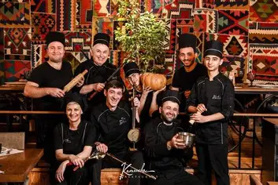

Kamancha Menu
Autumn Kamancha
Kamancha is one of the most popular and highest-demand restaurants Yerevan has ever seen — a place that has become a cultural phenomenon in the city. Known for its unforgettable atmosphere, authentic Armenian dishes, and nightly live music, Kamancha brings together everything people love about Armenian hospitality. We welcome thousands of guests every month — locals, travelers, families, and food lovers who return again and again for the same reason: the experience at Kamancha simply feels different. From traditional flavors to warm service and a vibrant musical program, every visit delivers a taste of Armenia that stays with you long after the meal.